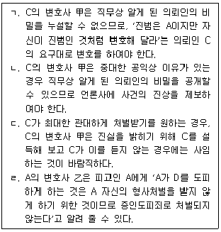
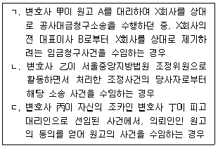
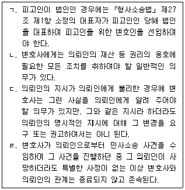
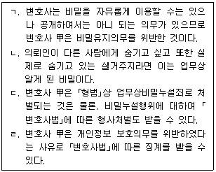
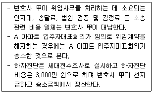
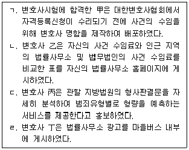
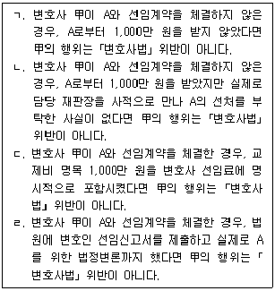

법조윤리 (2022-08-06 기출문제)
1과목: 임의 구분
1. 서울중앙지방법원에서 2년간 판사로 근무하다가 퇴직하여 개업한 변호사 甲에 관한 설명 중 옳지 않은 것은?
- 甲은 퇴직한 날부터 1년 동안 서울중앙지방검찰청이 처리하는 사건을 수임할 수 없다.
- 甲은 퇴직한 날부터 서울중앙지방법원에서 국선변호를 할 수 있다.
- 甲은 퇴직한 날부터 2년이 지난 후에는 판사로 근무할 당시 담당했던 사건을 수임할 수 있다.
- 甲은 퇴직일부터 2년 동안 수임한 사건에 관한 수임 자료와 처리 결과를 ｢변호사법｣ 시행령으로 정하는 기간마다 소속 지방변호사회에 제출하여야 한다.
(정답률: 37%)

2. 변호사의 겸직에 관한 설명 중 옳지 않은 것은?
- 변호사가 공무원·조정위원 또는 중재인으로서 직무상 취급하거나 취급하게 된 사건에 관하여 직무를 수행할 경우, 징계뿐만 아니라 형사처벌도 받을 수 있다.
- 변호사는 소속 지방변호사회의 겸직 허가를 받지 않으면 중앙노동위원회의 비상임 공익위원이 될 수 없다.
- 변호사는 소속 지방변호사회의 겸직 허가를 받지 않으면 상시 근무를 필요로 하지 않는 주식회사의 사외이사를 겸직할 수 없다.
- 변호사는 보수를 받는 공무원을 겸할 수 없으나, 지방의회 의원이 되는 경우에는 그러하지 아니하다.
(정답률: 28%)
3. 변호사 윤리에 관한 설명 중 옳지 않은 것은? (다툼이 있는 경우 판례에 의함)
- 신체구속을 당한 피고인 또는 피의자가 범하였다고 의심받는 범죄행위에 자신의 변호인이 관련되었다는 사정만으로 그 변호인과의 접견을 금지할 수 있다.
- 변호사인 변호인이 적극적으로 피고인 또는 피의자로 하여금 허위진술을 하도록 하는 것이 아니라 단순히 헌법상 권리인 진술거부권이 있음을 알려 주고 그 행사를 권고하는 것을 가리켜 변호사로서의 진실의무에 위배되는 것이라고는 할 수 없다.
- 변호사가 타인의 형사사건과 관련하여 수사기관이나 법원에 제출하거나 현출되게 할 의도로 법률행위 당시에는 존재하지 아니하였던 처분문서를 사후에 그 작성일을 소급하여 작성하는 것은 그와 같은 법률행위가 당시에 존재하였더라도 증거위조죄의 구성요건을 충족한다.
- 변호사가 사무직원을 통하여 의뢰인에게 항소심 판결문을 교부하고 상고할지 여부를 확인하도록 하였는데, 사무직원이 의뢰인에게 상고제기기간을 잘못 고지하여 상고제기기간이 도과되어 의뢰인이 상고를 하지 못하였다면, 변호사는 이로 인하여 의뢰인이 입은 손해를 배상할 책임이 있다.
(정답률: 10%)
4. 법률사무소의 사무직원으로 채용될 수 없는 경우는?
- 甲은 ｢변호사법｣을 위반하여 징역 1년의 형을 선고받고 그 집행이 끝난 후 3년이 지났다.
- 乙은 ｢국가공무원법｣상 징계처분에 의하여 해임된 후 2년이 지나지 않았다.
- 丙은 사문서위조죄로 징역 1년 6개월의 형을 선고받고 그 집행이 끝난 후 3년이 지나지 않았다.
- 丁은 교통사고처리특례법위반죄로 금고 1년에 집행유예 2년을 선고받고 그 유예기간이 지난 지 2년 7개월 후 파산선고를 받았다.
(정답률: 10%)
5. 주식회사의 직원으로 취업하려는 변호사 甲과 학교법인의 상근 이사로 취업하려는 변호사 乙에 관한 설명 중 옳지 않은 것은?
- 甲이 변호사로서 휴업을 한다면 지방변호사회의 겸직 허가를 받을 필요가 없다.
- 乙은 변호사로서 휴업을 하거나 지방변호사회의 겸직 허가를 받아야 한다.
- 취업 후 직원인 甲과 임원인 乙은 모두 그 직무를 수행함에 있어 독립성을 유지하여야 할 변호사로서의 기본 윤리를 준수하여야 한다.
- 취업 후 직원인 甲과 임원인 乙은 모두 변호사 윤리의 범위 안에서 그가 속한 단체의 이익을 위하여 성실히 업무를 수행하여야 한다.
(정답률: 28%)
6. 변호사의 공익활동의무에 관한 설명 중 옳지 않은 것은?
- 대한변호사협회의 개인회원은 연간 합계 30시간 이상 공익활동을 행하여야 한다. 다만 이 시간은 특별한 사정이 있는 경우 지방변호사회가 20시간까지 하향 조정할 수 있다.
- 변호사가 공익단체에 법률서비스를 제공하면서 상당히 저렴한 비용을 받으면 그 활동은 공익활동으로 인정될 수 없다.
- 법무법인은 법조경력이 2년 미만인 개인회원을 공익활동 수행변호사로 지정할 수 있다.
- 개인회원은 매년 2월 말까지 그 전년도 공익활동의 결과를 소속 지방변호사회에 보고하여야 한다.
(정답률: 0%)
7. 변호사 윤리에 관한 설명 중 옳지 않은 것은?
- 변호사는 법령에 따라 공공기관, 대한변호사협회 또는 소속 지방변호사회가 지정한 업무를 처리하여야 하고, 공익적 직무를 위촉받은 경우 이를 거절할 수 없다.
- 변호사연수는 일반연수와 특별연수로 구성되고, 일반연수는 변호사 전원을 대상으로, 특별연수는 희망하는 변호사를 대상으로 실시한다.
- 변호사는 수임에 관한 장부를 작성하여 그 작성일로부터 3년간 법률사무소에 보관하여야 한다.
- 변호사 전문분야의 등록을 위해서는 법조경력이 최소한 3년 이상이어야 한다.
(정답률: 0%)
8. 사내변호사에 관한 설명 중 옳지 않은 것은?
- 법무법인에 소속된 변호사가 주식회사의 사내변호사로서 변호사 업무를 수행하기 위해서는 소속 지방변호사회로부터 겸직 허가를 받아야 한다.
- 사내변호사가 자신을 고용한 회사의 사업에 관하여 법률자업무를 수행하던 중 그 사업이 범죄행위에 해당된다고 판단되는 경우 즉시 그에 대한 협조를 중단하여야 한다.
- 사내변호사가 다른 개업변호사에게 사건을 소개하고 소개의 대가로 '사건상담 및 법적 쟁점파악'에 대한 자문료 명목의 돈을 받은 경우 ｢변호사법｣에 위반된다.
- 사내변호사를 고용한 회사가 다른 회사로부터 돈을 받고 사내변호사로 하여금 다른 회사의 법률사무를 처리하게 하면 ｢변호사법｣에 위반된다.
(정답률: 10%)
9. 변호사 보수에 관한 설명 중 옳은 것은? (다툼이 있는 경우 판례에 의함)
- 변호사에게 계쟁 사건의 처리를 위임함에 있어서 그 보수 지급 및 수액에 관하여 명시적인 약정을 아니 하면, 특별한 사정이 없는 한 무보수로 위임사무를 처리할 묵시의 약정이 있는 것으로 봄이 상당하다.
- 약정된 보수액이 부당하게 과다하여 신의성실의 원칙이나 형평의 원칙에 반한다고 볼 만한 특별한 사정이 있는 경우에는 보수금 약정이 전부 무효가 된다.
- 약정된 보수액이 부당하게 과다하여 신의성실의 원칙이나 형평의 원칙에 반한다고 볼 만한 특별한 사정의 존재에 대한 증명책임은 약정된 보수액이 부당하게 과다하다고 주장하는 측에 있다.
- 형사변호사건에서 무죄판결에 대한 성공보수약정은 선량한 풍속 기타 사회질서에 위배되는 것으로 평가할 수 있지만, 형사고소대리사건에서 피고소인의 구속에 대한 성공보수약정은 유효하다.
(정답률: 0%)
10. 변호사 윤리에 관한 설명 중 옳지 않은 것은? (다툼이 있는 경우 판례에 의함)
- 변호사 甲은 의뢰인 A를 대리하여 임대인 B를 상대로 임대차보증금반환청구소송을 제기하면서 착수금으로 위 임대차보증금반환채권의 일부를 양수하기로 약정하였다. 이 경우 甲은 ｢변호사법｣에 따라 형사처벌되지만, 위 약정이 무효는 아니다.
- 변호사 乙은 의뢰인 C를 대리하여 임차인 D를 상대로 건물인도청구소송을 진행하던 중 D로부터 사건진행을 늦추어 주면 1,000만 원을 지급하겠다는 제안을 받아 2차에 걸쳐 변론기일을 연기하도록 협조해 주었다. 이 경우 乙은 ｢변호사법｣에 따라 징계처분을 받을 수 있으나 형사처벌을 받지는 않는다.
- 변호사 丙은 의뢰인 E를 대리하여 F를 상대로 구상금청구소송을 진행하던 중 제1회 변론기일에 법정 밖에서 F에게 'E가 무조건 이기는 사건이다. 내가 지급받은 수임료의 30%를 지급하겠으니 소송에서 다투지 말아 달라'고 요청하였고, 이에 따라 F가 법정에서 청구를 모두 인정하여 사건이 빠르게 종결되었다. 이 경우 丙의 행위는 ｢변호사윤리장전｣에 위반된다.
- 변호사 丁은 여러 명을 잔혹한 방법으로 살해한 혐의로 재판을 받고 있는 구속피고인 G의 아버지 H로부터 수임의뢰를 받자 사건의 내용이 사회 일반으로부터 비난을 받는다는 이유만으로 수임을 거절하였다. 이 경우 丁의 행위는 ｢변호사윤리장전｣에 위반된다.
(정답률: 19%)
11. 변호사 甲은 A의 소개로 구속피의자 B에 대한 형사변호사건을 수임하였다. 이에 관한 설명 중 옳지 않은 것은?
- A가 변호사 甲의 친구인 경우, 甲이 A에게 소개비로 50만 원 상당의 백화점상품권을 지급하면 ｢변호사법｣에 위반된다.
- A가 변호사 甲의 사무직원인 경우, 甲이 A에게 사건 유치의 대가로 현금 100만 원을 지급하면 ｢변호사법｣에 위반된다.
- A가 사건의 알선을 업으로 하는 자인 경우, 변호사 甲이 A에게 사건 소개의 대가로 어떠한 금품도 지급하지 아니하면 ｢변호사윤리장전｣에 위반되지 않는다.
- A가 변호사인 경우, 변호사 甲이 A에게 사건 소개의 대가로 A의 골프연습장 레슨비를 대신 지급하겠다고 약속하면 ｢변호사법｣에 위반된다.
(정답률: 19%)
12. 변호사의 수임사무에 관한 설명 중 옳지 않은 것은? (다툼이 있는 경우 판례에 의함)
- 소송대리를 위임받은 변호사는 그 수임사무를 수행함에 있어 전문적인 법률지식과 경험에 기초하여 성실하게 의뢰인의 권리를 옹호할 의무가 있으며, 구체적인 위임사무의 범위는 변호사와 의뢰인 사이의 위임계약에 의하여 정해진다.
- 위임사무의 종료 단계에서 패소판결이 있었던 경우에는 의뢰인으로부터 상소에 관하여 특별한 수권이 없었다 하더라도 그 판결을 점검하여 의뢰인에게 불이익한 계산상의 잘못이 있다면 그 판결의 내용과 상소하는 때의 승소 가능성 등에 관하여 구체적으로 설명하고 조언할 의무가 있다.
- 위임종료의 경우 급박한 사정이 있는 때에는 수임인은 위임인이 위임사무를 처리할 수 있을 때까지 그 사무의 처리를 계속하여야 한다.
- 소송위임사무 처리 도중 수임인의 귀책사유로 계약이 종료된 경우라면, 위임인은 수임인이 계약종료 당시까지 이행한 사무처리 부분에 관하여 상당하다고 인정되는 보수 금액과 사무처리 비용을 지급할 의무가 없다.
(정답률: 10%)
13. 변호사 징계 절차에 관한 설명 중 옳지 않은 것은?
- 지방검찰청검사장 또는 고위공직자범죄수사처장은 범죄수사 등 업무의 수행 중 변호사에게 징계사유가 있는 것을 발견하였을 때는 대한변호사협회의 장에게 그 변호사에 대한 징계개시를 신청하여야 한다.
- 대한변호사협회의 장은 변호사가 징계사유에 해당하면 대한변호사협회 변호사징계위원회에 징계개시청구를 하여야 한다.
- 변호사에 대한 징계사건의 조사는 대한변호사협회가 담당하고 징계처분의 집행은 법무부장관이 담당한다.
- 대한변호사협회 변호사징계위원회의 결정에 불복하는 징계개시 신청인은 그 통지를 받은 날부터 30일 이내에 법무부 변호사징계위원회에 이의신청을 할 수 있다.
(정답률: 0%)
14. 범죄단체 소속의 A는 피해자 B를 야간에 습격하여 심각한 상해를 입혔다. A는 전과가 많기 때문에 이번에 형사처벌을 받으면 중형을 피할 수 없을 것이라고 생각하여 부하 조직원인 C로 하여금 거짓 자수를 하도록 하였고, C는 A의 지시에 따라 자신이 B에게 상해를 입힌 범인이라고 경찰에 자수하였다. 한편 A는 D가 자신의 범행을 목격하였음을 알게 되어, D를 협박하여 수사기관이나 법정에 출석하지 못하게 하고 D에게 자금을 주어 도피하게 하였다. 이후 A는 B에 대한 상해와 무관하게 범죄단체조직죄로 수사기관에 구속되었다. 이에 관한 설명 중 옳지 않은 것을 모두 고른 것은? (다툼이 있는 경우 판례에 의함)

- ㄱ, ㄴ
- ㄱ, ㄷ
- ㄴ, ㄹ
- ㄷ, ㄹ
(정답률: 10%)
15. 변호사 징계에 관한 설명 중 옳지 않은 것은?
- 징계의 청구는 징계사유가 발생한 날부터 3년이 지나면 하지 못한다.
- 징계의 종류에는 영구제명, 제명, 3년 이하의 정직, 3천만 원 이하의 과태료, 견책의 다섯 가지가 있다.
- 변호사가 변호사의 직무와 관련하여 2회 이상 금고 이상의 형을 선고받아 그 형이 확정된 경우(과실범은 제외한다) 영구제명의 징계처분을 받을 수 있다.
- ｢변호사법｣이 규정하는 제명, 정직, 과태료, 견책에 공통되는 징계사유는 '｢변호사법｣ 위반, 소속 지방변호사회나 대한변호사협회의 회칙 위반, 직무와 관련하여 변호사로서의 품위를 손상하는 행위'로 한정된다.
(정답률: 0%)
16. 외국법자문사에 관한 설명 중 옳지 않은 것은?
- 외국변호사의 자격을 갖춘 변호사가 외국법자문사의 자격승인을 신청하는 경우 변호사업을 휴업하거나 폐업하지 않아도 된다.
- 외국변호사의 자격을 취득한 자가 외국법자문사의 자격승인을 받기 위해서는 원자격국에서 3년 이상 법률사무를 수행한 경력이 있어야 한다.
- 외국변호사의 자격을 취득한 자가 원자격국 외의 외국에서 원자격국의 법령에 관한 법률사무를 수행한 기간은 3년까지 외국법자문사의 자격승인을 받기 위해서 필요한 기간에 산입할 수 있다.
- 외국변호사의 자격을 취득한 자가 대한민국에서 원자격국의 법령에 관한 조사 등의 업무를 주된 업무로 수행한 기간은 2년까지 외국법자문사의 자격승인을 받기 위해서 필요한 기간에 산입할 수 있다.
(정답률: 10%)
17. A는 B를 상대로 전세계약에 기한 전세금반환청구소송을 제기하면서 소송대리인으로 법무법인 L을 선임하였고, 법무법인 L은 변호사 甲, 乙을 담당변호사로 지정하였다. 이후 B는 위 전세계약을 통해 A로부터 전세금을 편취하였다는 내용의 사기죄로 기소되었고, 이 사건은 위 민사소송과 기초가 된 분쟁의 실체가 동일하다. 이에 관한 설명 중 옳은 것은? (다툼이 있는 경우 판례에 의함)
- 전세금반환청구소송이 종료된 이후 법무법인 L이 해산하였고 그 이후 변호사 甲이 개인변호사로서 B의 사기사건 변호인으로 선임된 경우, A와 B 모두의 동의를 받았다면 甲은 수임제한규정을 위반한 것이 아니다.
- 변호사 乙이 전세금반환청구소송에서 직접적으로 변론에 관여한 바 없고 그 이후 B의 사기사건에서 국선변호인으로 선임된 경우, 乙은 사기사건에서 B를 변호할 수 있다.
- 당사자가 직접 선임한 사선변호인이 ｢변호사법｣ 제31조 제1항 제1호를 위반하여 형사사건에서 피고인을 변호한 경우, 다른 특별한 사정이 없는 한 변호인의 조력을 받을 피고인의 권리가 침해되었다고 볼 수는 없다.
- 국선변호인이 ｢변호사법｣ 제31조 제1항 제1호를 위반하여 형사사건에서 피고인을 변호한 경우, 그러한 형사사건에는 소송 절차에 관한 법령위반의 위법이 있지만, 이러한 위법은 판결에 영향을 미친 위법이라고는 할 수 없으므로 상고이유가 될 수 없다.
(정답률: 10%)
18. 법무법인의 업무 및 업무집행에 관한 설명 중 옳지 않은 것은?
- 법무법인의 구성원이었거나 소속 변호사였던 자는 법무법인의 소속 기간 중 그 법인이 상의를 받아 수임을 승낙한 사건에 관하여 변호사의 업무를 수행할 수 있다.
- 법무법인이 수임한 사건의 담당변호사가 여러 명인 경우 담당변호사들 중 1인의 행위는 법무법인을 대표하는 행위로 인정된다.
- 법무법인이 소속 변호사를 담당변호사로 지정할 때에는 구성원 변호사도 반드시 공동으로 지정하여야 하며, 법무법인이 담당변호사를 지정하지 아니한 경우에는 구성원 모두를 담당변호사로 지정한 것으로 본다.
- 법무법인은 ｢변호사법｣이 아닌 다른 법률에서 변호사에게 그 법률에 정한 자격을 인정하는 경우 그 구성원 변호사가 그 자격에 의한 직무를 수행할 수 있을 때에는 그 직무를 법인의 업무로 할 수 있다.
(정답률: 0%)
19. 변호사가 수임할 수 있는 경우를 모두 고른 것은?

- ㄱ, ㄴ
- ㄱ, ㄷ
- ㄴ, ㄷ
- ㄱ, ㄴ, ㄷ
(정답률: 10%)
20. 변호사의 비밀유지의무에 관한 설명 중 옳은 것은?
- 변호사 甲은 피고인 A의 형사사건의 변호인으로 충실히 직무를 수행하여 무죄판결을 받았다. 甲이 관련 직무를 수행하는 과정에서 작성하였던 메모를 A의 동의를 받고 신문에 기고하였다면 비밀유지의무를 위반한 것이다.
- 변호사 乙은 위임사무를 처리하는 과정에서 알게 된 의뢰인 B의 비밀을 중대한 공익상의 이유가 있다면 제한 없이 공개할 수 있다.
- 변호사 丙은 의뢰인 C로부터 수임한 사건을 성실히 수행하였으나 C는 丙의 불성실한 변론으로 인해 패소했다는 이유로 丙에 대하여 손해배상청구의 소를 제기하였다. 丙은 패소의 경위를 입증하기 위하여 필요한 범위 내에서 직무상 알게 된 C의 비밀을 공개할 수 있다.
- 변호사 丁이 파산선고를 받아 변호사 등록이 취소된 이후에 의뢰인이었던 D에 관한 비밀을 공개하였다면, 민사상 손해배상책임을 지는 것은 별론으로 하고 변호사의 비밀유지의무를 위반한 것은 아니다.
(정답률: 19%)
2과목: 임의 구분
21. 법관 윤리 및 검사 윤리에 비추어 허용되지 않는 것은?
- 법관 甲은 재판업무상 필요하여 자신이 재판하고 있는 민사사건의 대리인을 법정이 아닌 자신의 사무실에서 면담하였다.
- 법관 乙은 형사법학회에서 토론자로 구체적 사건에 관하여 공개적으로 의견을 표명하였다.
- 검사 丙은 소속 기관장에게 신고하고 수사권 조정에 대한 자신의 의견을 언론에 기고하였다.
- 검사 丁은 자신이 근무하는 검찰청에서 조사받고 있는 고등학교 동창에게 아무런 대가를 받지 않고 자신이 잘 아는 변호사를 소개해 주었다.
(정답률: 9%)
22. 변호사 甲은 A가 주도한 다단계 금융사기의 공범으로 기소되어 법원에서 징역 1년에 집행유예 2년을 선고받고 그 형이 확정되었다. 이에 관한 설명 중 옳은 것은?
- 유죄로 인정된 변호사 甲의 범죄행위에 ｢변호사법｣ 위반행위가 포함되어 있어야 대한변호사협회는 甲을 징계할 수 있다.
- 변호사 甲은 집행유예기간이 경과하면 바로 변호사 등록을 할 수 있다.
- 변호사 甲에 대한 징계 절차가 진행되던 중 甲에 대하여 징역 1년에 집행유예 2년의 유죄판결이 확정된 경우, 대한변호사협회는 징계 절차를 중단하고 소속 지방변호사회에 甲의 변호사 등록취소를 명하여야 한다.
- 변호사 甲에 대한 유죄판결이 확정되었음에도 甲이 변호사 명부에 등록되어 있는 경우, 법무부장관은 대한변호사협회에 甲의 변호사 등록취소를 명하여야 한다.
(정답률: 19%)
23. 법무법인 L의 사무장으로 근무하던 A는 2021. 1. 11. 의뢰인 B의 민사합의금 3억 원을 횡령하였고, 이로 인하여 민사합의가 성립되지 않아 B에게 손해가 발생하였다. 법무법인 L에는 甲, 乙, 丙 3명의 구성원 변호사가 있다. 변호사 乙은 위 횡령사건이 발생한 후인 2022. 1. 3.에 가입한 구성원 변호사이고, 변호사 丙은 법인등기부에는 구성원 변호사로 등재되어 있으나 실제로는 법무법인 L에 고용되어 매달 급여를 받고 공증업무만 담당하였을 뿐 다른 업무에는 관여하지 않았다. 이에 관한 설명 중 옳지 않은 것은? (다툼이 있는 경우 판례에 의함)
- B는 법무법인 L을 상대로 손해배상청구를 할 수 있다.
- 법무법인 L의 재산으로 채무를 완제할 수 없을 때에는 변호사 甲은 그 채무를 변제할 책임이 있다.
- 변호사 乙은 법무법인 L의 구성원이 되기 전에 생긴 법무법인 L의 채무에 대하여도 책임을 진다.
- 변호사 丙은 법무법인 L의 운영에는 전혀 관여하지 않았으므로 실질적으로 법무법인 L의 구성원 변호사라고 할 수 없어 나머지 구성원들과 연대책임을 지지 않는다.
(정답률: 17%)
24. 변호사와 의뢰인의 관계에 관한 설명 중 옳지 않은 것을 모두 고른 것은? (다툼이 있는 경우 판례에 의함)

- ㄱ, ㄴ
- ㄱ, ㄷ
- ㄴ, ㄷ
- ㄷ, ㄹ
(정답률: 0%)
25. 변호사 甲은 변호사 乙과 함께 법무법인 L의 변호사로 일하고 있다. 甲은 A로부터 이혼사건의 위임을 받아 가사조사절차를 진행하던 중, A가 가사조사절차에 대하여 불안해하자 조사과정에 대한 의뢰인의 이해도를 높이기 위한 목적에서 乙이 담당하였던 B의 이혼소송 중 작성된 가사조사보고서를 乙로부터 받아 A에게 교부하였다. 이에 관한 설명 중 옳지 않은 것은?
- 변호사 乙이 B의 이혼사건을 수임하지 않고 수임을 위한 법률상담 과정에서 가사조사보고서를 수령하였을 뿐이라 하더라도 乙은 가사조사보고서에 대한 비밀유지의무를 부담한다.
- B가 자신의 비밀을 다른 변호사에게 공개하지 말라고 요구하였을 경우, 변호사 乙이 변호사 甲에게 B에 대한 가사조사보고서를 준 것은 변호사의 비밀유지의무에 위반된다.
- 변호사 甲이 B에 대한 가사조사보고서를 A에게 준 목적이 의뢰인 A에게 가사조사절차를 안내하면서 조사과정에 대한 이해도를 높이기 위한 것이라면 의뢰인의 이익을 위한 것으로서 ｢변호사윤리장전｣에 위반되지 않는다.
- 법무법인 L이 해산한 후 변호사 甲이 A의 가사조사보고서를 자신의 법률사무소 홍보 블로그에 공개한 경우 비밀유지의무에 위반된다.
(정답률: 28%)
26. 변호사의 이익충돌회피의무에 관한 설명 중 옳지 않은 것은? (다툼이 있는 경우 판례에 의함)
- 변호사는 수임하고 있는 사건의 상대방이 위임하는 다른 사건을 수임할 수 없는 것이 원칙이지만, 수임하고 있는 사건의 위임인이 동의하거나 그에게 손해가 생길 우려가 없는 경우에는 수임할 수 있다.
- 변호사는 자신의 의뢰인이 아닌 당사자들 사이의 분쟁 해결에 관여하여 중립자로서의 역할을 수행할 수 있다.
- 원고 소송복대리인으로서 변론기일에 출석하여 소송행위를 하였던 변호사가 피고 소송복대리인으로도 출석하여 변론한 경우라도, 당사자가 그에 대하여 사실심 변론종결시까지 아무런 이의를 제기하지 않았다면 그 소송행위는 소송법상 완전한 효력이 생긴다.
- 변호사는 명백한 사항들과 관련된 증언을 하는 경우 스스로 증인이 되어야 할 사건을 수임할 수 있다.
(정답률: 10%)
27. X회사의 근로자였던 의뢰인 A는 시민단체의 지원을 받아 X회사를 상대로 퇴직금청구소송을 진행하였고, 그 소송을 변호사 甲이 수임하여 대리하였다. 이 사건은 소송 외에서 합의 후 소 취하로 마무리가 되었는데, 당시 A와 X회사는 'A는 X회사를 상대로 제기한 이 사건 소송 관련 내용을 제3자에게 누설하지 않겠다'는 내용의 비밀유지계약서에 서명하였다(단, 甲은 위 비밀유지계약서에 서명하지 않았다). 소 취하 2년 후 A와 동일한 처지의 B가 동일한 시민단체의 소개를 통해 변호사 甲을 찾아왔다. 이에 관한 설명 중 옳지 않은 것은?
- 변호사 甲이 B에게 A와 X회사 사이의 퇴직금청구소송의 합의 내용을 이야기하면서 사건을 유치하였다면, ｢변호사법｣상 비밀유지의무에 위반된다.
- B는 변호사 甲이 유사한 사건을 처리한 경험이 있음을 시민단체를 통해 알고 찾아왔으므로, 甲이 A의 사건을 처리하였다는 사실은 甲이 지켜야 할 비밀에 해당하지 않는다.
- 변호사 甲이 B의 사건을 수임하는 것은 비밀유지의무에 위반되지 않는다.
- 변호사 甲이 A의 사건을 대리하면서 알게 된 법률적 지식과 요령을 B에게 이야기하는 것은 ｢변호사법｣상 비밀유지의무에 위반된다.
(정답률: 0%)
28. 변호사 甲은 유명 연예인의 형사사건을 수임하였다. 의뢰인은 자신의 프라이버시를 위해 甲에게도 본인의 실거주지를 알리지 않았는데, 甲은 업무를 수행하는 과정에서 의뢰인의 실거주지를 알게 되었고 이를 자신의 친구 한 명에게 알려 주었다. 이에 관한 설명 중 옳지 않은 것을 모두 고른 것은?

- ㄱ, ㄴ
- ㄱ, ㄷ
- ㄴ, ㄹ
- ㄷ, ㄹ
(정답률: 0%)
29. A 아파트 입주자대표회의는 해당 아파트를 건축・분양한 건설회사를 상대로 하자보수를 청구하는 소송을 변호사 甲에게 위임하면서 다음과 같은 내용의 특약을 체결하였다. 이에 관한 설명 중 옳지 않은 것은? (다툼이 있는 경우 판례에 의함)

- 변호사 甲이 소송 관련 비용을 대납하기로 한 특약은 유효하다.
- 변호사 甲은 부득이한 사유 없이 A 아파트 입주자대표회의에 불리한 시기에 사임하면 그 손해를 배상할 책임이 있다.
- 변호사 甲이 이미 상당한 소송비용과 하자진단비를 지출했더라도 A 아파트 입주자대표회의는 언제든지 소송위임계약을 해지할 수 있다.
- A 아파트 입주자대표회의가 임의로 위임계약을 해지한 것으로 인정되는 경우 승소간주특약이 무효이므로 변호사 甲은 승소사례금을 청구할 수 없다.
(정답률: 19%)
30. 변호사의 사건수임과 경유 절차에 관한 설명 중 옳지 않은 것은?
- 변호사는 사건을 수임하였을 때에는 소송위임장이나 변호인선임신고서 등을 해당 기관에 제출한다.
- 해당 기관이 공공기관인 경우에는 사전에 소속 지방변호사회를 경유하여야 한다.
- 사전에 경유할 수 없는 급박한 사정이 있는 경우에는 사후에 지체 없이 경유 절차를 보완하여야 한다.
- 주사무소가 서울인 법무법인의 강릉분사무소에서 수임한 사건은 서울지방변호사회가 아니라 강원지방변호사회를 경유하여야 한다.
(정답률: 0%)
31. ｢변호사법｣ 위반으로 인한 형사처벌 대상이 아닌 것은?
- 주식회사 X와 주식회사 Y 사이의 중재사건에 대하여 중재인으로서 중재판정문을 작성한 변호사 甲이 종전 사건과 기초가 된 분쟁의 실체가 동일한 사건에 관하여 주식회사 X의 중재대리인으로 선임되어 활동하였다.
- 공정거래위원회에서 2020. 7. 1.부터 1년간 근무하다가 퇴직한 후 법률사무소를 개설한 변호사 乙이 2021. 12. 10. 공정거래위원회에서 조사 중인 사건을 수임하여 처리하였다.
- 미국 뉴욕주 변호사 자격을 취득한 변호사 丁은 자신을 '국제변호사'라고 표기한 명함을 배포하였다.
- 2021. 4.경 변호사시험에 합격하고 변호사 등록을 마친 戊가 2021. 6.경 변호사 己와 공동으로 형사사건을 수임하였다.
(정답률: 10%)
32. 변호사의 이익충돌회피의무에 관한 설명 중 옳지 않은 것은? (다툼이 있는 경우 판례에 의함)
- 「변호사윤리장전」상 법무법인의 특정 변호사에게만 이익충돌사유가 있는 경우, 당해 변호사가 사건의 수임 및 업무수행에 관여하지 않고 그러한 사유가 법무법인의 사건처리에 영향을 주지 아니할 것이라고 볼 수 있는 합리적 사유가 있는 때에는 사건의 수임이 제한되지 아니하는 경우가 있다.
- 변호사는 그가 속한 법무법인의 다른 변호사가 증언함으로써 의뢰인의 이익이 침해되거나 침해될 우려가 있는 경우에는 당해 사건에서 변호사로서의 직무를 수행하지 아니한다.
- 변호사는 상대방 당사자가 변호사를 선임한 경우, 상대방 변호사의 동의 없이는 의뢰인이 상대방 당사자와 직접 접촉하게 하여서는 아니 된다.
- 당사자의 일방으로부터 상의를 받아 그 수임을 승낙한 사건의 상대방이 위임하는 사건이 동일한지의 여부는 그 기초가 된 분쟁의 실체가 동일한지의 여부에 의하여 결정되어야 하는 것이므로 상반되는 이익의 범위에 따라서 개별적으로 판단되어야 하는 것이고, 소송물이 동일한지 여부나 민사사건과 형사사건 사이와 같이 그 절차가 같은 성질의 것인지 여부는 관계가 없다.
(정답률: 0%)
33. 법무법인 L의 구성원 변호사 甲은 A 아파트 주변 공사로 인해 발생한 소음 피해에 대한 손해배상청구소송을 A 아파트 입주민들로부터 수임하고자 한다. 변호사 甲의 광고 행위 중 허용되지 않는 것은?
- A 아파트 입주민들이 많이 보는 생활정보지에 자신의 학력과 환경 분야 전변호사임을 내용으로 하는 광고를 게재한다.
- A 아파트 입주민들을 대상으로 공사 소음 피해에 관한 유료법률상담서비스를 제공하겠다는 내용의 공문을 소속 지방변호사회의 허가를 받아 A 아파트 입주자대표회의에 보낸다.
- A 아파트 앞 도로에서 자신의 명함을 배포하여 홍보한다.
- A 아파트 입주민들에게 법무법인 L의 명칭, 연락처 및 광고책임변호사의 성명만 기재된 인쇄물을 우편으로 발송한다.
(정답률: 0%)
34. 변호사의 광고에 관한 설명 중 옳지 않은 것은?
- 변호사가 무료 또는 부당한 염가의 수임료를 표방하는 광고를 하는 것은 ｢변호사법｣ 위반으로 형사처벌 대상이다.
- 변호사는 변호사가 아닌 사람이 변호사의 직무와 관련한 서비스를 취급하는 것으로 표시하는 행위에 협조하여서는 아니 된다.
- 변호사는 타인의 영업이나 홍보를 위하여 변호사 광고에 타인의 성명을 표시하여서는 아니 되고, 이는 그 타인이 변호사인 경우에도 동일하다.
- 변호사 광고에는 광고 주체인 변호사 또는 광고책임변호사의 성명을 반드시 표시하여야 하지만, 광고가 사무소 소재지에 위치하면서 사무소 명칭, 연락처만을 표시하는 경우는 제외한다.
(정답률: 0%)
35. 변호사의 광고로 허용되지 않는 행위를 모두 고른 것은?

- ㄱ, ㄹ
- ㄴ, ㄷ
- ㄱ, ㄴ, ㄷ
- ㄱ, ㄴ, ㄷ, ㄹ
(정답률: 28%)
36. 변호사의 비밀유지의무에 관한 설명 중 옳지 않은 것은?
- 변호사가 사건처리 중에 사임 또는 해임되거나 사건종결로 수임관계가 종료된 후에도 변호사는 비밀유지의무를 준수해야 한다.
- 변호사가 의뢰인의 비밀에 해당하는 사실에 대한 증인으로 채택된 경우, 증언거부권이 있으므로 그 사유를 소명하여 법정에 출석하지 않을 수 있고, 출석하더라도 증인선서를 거부할 수 있다.
- 변호사 또는 변호사였던 자가 그 업무상 위탁을 받은 관계로 알게 된 사실로서 타인의 비밀에 관한 것은 형사소송에서 증언을 거부할 수 있다.
- 변호사가 의뢰인에게 불리한 증거를 소지한 경우 이를 제출하지 않았다고 하여 진실의무에 반하는 것은 아니고, 오히려 의뢰인의 승낙 없이 이를 제출하면 성실의무 또는 비밀유지의무에 위반된다.
(정답률: 0%)
37. 변호사의 광고에 관한 설명 중 옳은 것은?
- 변호사는 자신의 업무에 관하여 '최고'라는 용어를 사용하여 광고할 수 없지만 주로 취급하는 업무에 관하여 '전문'이라는 용어를 사용하여 광고할 수 있다.
- 서울중앙지방법원에서 판사로 근무하다가 퇴직한 변호사가 퇴직 후 1년이 지난 다음에 서울중앙지방법원 사건에 대한 수임 제한이 해제되었다는 광고를 하는 것은 허용된다.
- 법률사무소 소재지 법원에 배우자가 판사로 근무하는 경우 법복을 입은 배우자와 함께 촬영한 대형 사진을 법률사무소의 상담실 벽에 걸어 두는 것은 변호사 광고로 허용된다.
- 변호사의 승소율에 관한 광고는 오직 객관적 사실에 부합하는 경우에 한하여 허용된다.
(정답률: 9%)
38. 변호사 甲은 사기죄로 기소되어 수감 중인 A에게 담당 재판장과 고등학교 동사이임을 강조하면서 A로부터 담당 재판장과의 사적인 비공개 면담을 위한 교제비 명목으로 1,000만 원을 받기로 약속하였다. 이에 관한 설명 중 옳지 않은 것을 모두 고른 것은?

- ㄱ, ㄹ
- ㄴ, ㄷ
- ㄱ, ㄴ, ㄹ
- ㄱ, ㄴ, ㄷ, ㄹ
(정답률: 0%)
39. 변호사의 비밀유지의무에 관한 설명 중 옳은 것은? (다툼이 있는 경우 판례에 의함)
- 변호사 甲은 A의 의뢰를 받아 법률의견서를 작성하여 전자우편으로 전송하였는데, 추후 A에 대한 수사과정에서 검사가 컴퓨터 등 저장매체의 압수를 통하여 법률의견서를 취득한 다음 이를 출력하여 공판과정에서 증거로 신청하였다. 피고인 A가 위 법률의견서를 증거로 함에 동의하지 아니하고, 변호사 甲도 그 법률의견서의 작성 경위에 관한 증인으로 출석하여 증언거부권을 행사한 경우 그 법률의견서는 변호인-의뢰인 특권에 의하여 증거능력이 인정되지 아니한다.
- 비밀유지의무에 있어서 변호사가 의뢰인으로부터 직접 듣거나 제3자를 통하여 알게 된 비밀은 비밀유지의무의 '비밀'에 포함되지만 변호사가 직무수행과정에서 우연한 기회에 알게 된 비밀은 비밀유지의무의 '비밀'에 포함되지 않는다.
- 비밀유지의무는 기본적으로 의뢰인에 대한 의무이므로 잠재적 의뢰인에 대하여는 적용되지 아니한다.
- 변호사 乙이 업무상횡령죄로 기소된 B의 변호를 하게 된 경우 B의 처 C에게 수사기록을 복사하여 주기 위해서는 B의 동의 등 정당한 사유가 있어야 한다.
(정답률: 0%)
40. 변호사의 민사사건 수임과 보수에 관한 설명 중 옳지 않은 것은? (다툼이 있는 경우 판례에 의함)
- 변호사는 그 직무에 관하여 사무보수, 사건보수 및 실비변상을 받을 수 있고, 사건보수는 그 사건의 종류에 따라 착수금과 성공보수로 나눌 수 있다.
- 제1심 재판에 대한 성공보수약정에 따른 변호사의 성공보수청구권은 당사자 사이에 특별한 약정이 없는 한 제1심 판결이 선고된 때로부터 3년간 행사하지 아니하면 시효로 인하여 소멸한다.
- 변호사는 사건을 수임할 때 착수금 없이 승소액의 일정 비율을 성공보수로 받는 약정을 할 수 있다.
- 항소심 판결이 상고심에서 파기되고 사건이 환송될 경우를 대비하여 미리 환송 후 사건을 위임사무의 범위에서 제외하기로 약정하는 것이 가능하고, 이러한 경우에 변호사는 상고심에서의 파기환송 여부와 관계없이 위임사무의 종료에 따른 보수를 청구할 수 있다.
(정답률: 10%)
판사가 퇴직한 후에는 국선변호를 할 수 없습니다. 또한, "甲은 퇴직한 날부터 2년이 지난 후에는 판사로 근무할 당시 담당했던 사건을 수임할 수 있다."는 이유는 판사가 근무한 사건에 대한 기억력과 경험을 활용하여 변호사로서 더욱 효과적인 변호 활동을 할 수 있도록 하기 위함입니다.